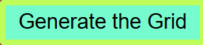
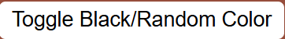
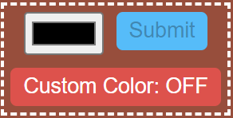
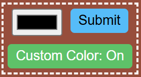

How To Play
Etch-A-Sketch is a classic drawing toy that lets you create sketches by moving a cursor across a grid. Turning the controls draws continuous lines, allowing you to make patterns, shapes, and designs in real time. This digital version recreates that experience by letting you draw on a grid with your mouse, change colors, and erase or reset the canvas for a fresh start.
Play Now
When you first open the website you will be shown a blank box where you will play the game.
- To start the game, first click on button on the sidebar. A popup will appear where you can enter the number of cells you want (maximum of 100).
- Now you can hover your mouse over the cells with which you want to color, note that by default the color will be black, and it will have a low opacity, which you can gradually increase as you move in and our of the cell
- By clicking on the you can make the color which will appear on the cells to be random. And clicking  you can go back to black color.
- The button, while turned on will allow you to fill the cells, but when clicked and turned off you can freely move your cursor without filling any cell. Note: You can also enter coloring off mode by pressing the Esc key.
- If you want the opacity to increase which you move in and our of a cell, keep the button turned on, if you want the cells to not be opaque or you want the opacity to remain the same then turn it off
- You can manually increase the opacity of a cell by Ctrl + Clicking on a specific cell, but if you want to decrease the opacity then click on and turn it on and vice versa.
- If you want to fill the cells up with a color of your choosing then pick a color from the color picker and click on custom color off  and turn it on and then click on the submit button 
- To erase the cells you can either click on that cell with your mouse or you can press the button and turn it on
- To remove the internal borders of the container you can press the button and turn if off
- At any point if you want to start over, you can click on the button to reset the grid
- If you want to restart or change the number of grid cells simply click on and re-enter the number you want.
-
Important Shorcuts:
- Click to remove color
- Ctrl + Click to change opacity
- Esc to stop coloring and to stop erasing
Gallery